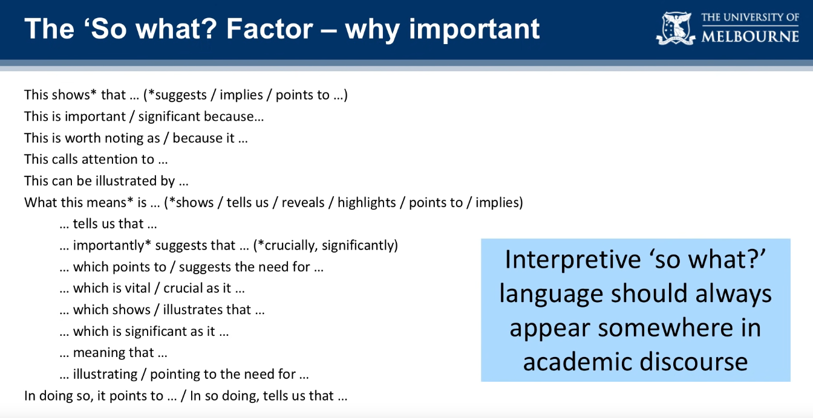
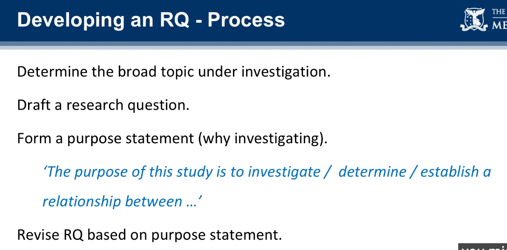
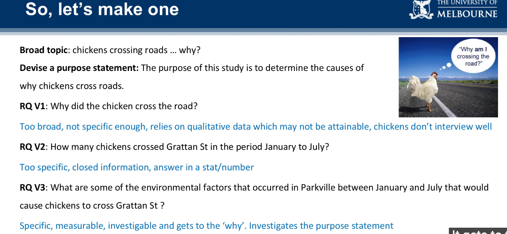

Definition
Limitations
potential weaknesses of the study which are not in your control
- these can be associated with the research design. sampling strategies, time and certain other factors
Delimintations
There are set by the reasearchers
These are the boundaries or scope set by the author to meet study objectives and goals, this means that these are in the control of researchers
In a way, delimitations are not as much as “why I did this”, but rather “why I did not do it like this.”
Assumptions
These are the things which are not in your control, however, you need such assumptions to proceed your work
These things are accepted to be true, mostly discussed in discussion section of the study
How to develope a strong research question
- Find your research area
- read survey, and related papers about the topic and find interesting observations or assertions
- e.g., we found that people may convert data from different modality (e.g, images and texts) into embeddings with same shape and apply self/cross attention
- e.g, or we find that authors use a general Transformer to answer physics counterfactual questions and outperform the model that contains a dedicated dynamic predictor module.
- Narrow down to a specific niche, make sure the research is within a feasible scope, instead of something too broad to achieve in a given timeframe
- ask open-ended ‘how’ and ‘why’ question
- why transformer is just better in terms of answering counterfactual question
- e.g, examing the reasoning ability of a deep learning module is too broad, we can focus only on
- the multi-modal data / data input
- the sub module like attention module
- ask open-ended ‘how’ and ‘why’ question
- identify a research problem
- based on the assumptions e.g., counterfactual questions on multimodal data require reasoning ability
- identify the research gap (1. insufficient study, or 2. lack of understanding/controversy , 3. limitations of previous study stated in their paper)
- e.g., only a scarce amount of research has been done on the effect of embedding of same shape with attention mechanism has on the model’s reasoning ability
- turninig your research problem into research question
- comparative research,
- descriptive research
- e.g. what is the effect of xx module in solving xx problem
- correlational research



- Checklist for a good research question
- focused
- focus in reasonable scope
- researchable
- you can conduct experiments and get literatures
- feasible
- doable within certain timeframe
- Access to the data you need
- specific
- all the terms in the research question should have clear meaning
- complex
- not a simple research question that can be answer just using yes or no
- Relevant to your field
- target currently unanswered question and contribute knowledge that future research can build on
- focused